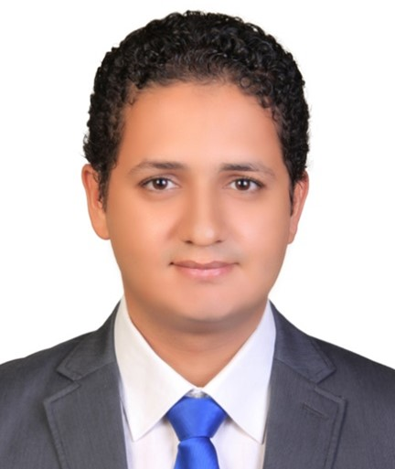

Mohamed Sakr

Personal Summary
An enthusiastic and highly motivated person who has a clear understanding of the role and
responsibilities as associated with being a civil structural engineer. Having good expertise in
construction and design of reinforced concrete buildings. Using computer‐aided analysis and design
programs according to codes and standard. I have great passion to enhance my experience in design
and analysis structures.
Experience
ESPLAN (STRUCTURAL ENGINEERING TECHNICIAN)
TALLINN | JUL2018–PRESENT
➢ Responsibility:
- Design and modelling of building structures and other relevant objects, according to best practice,
initial task, norms, company's quality standard.
- Implementing quality check for a project.
- Monitoring and following the timeline of the project and coordinating work.
- Compiling, archiving, systemizing of the project related documentation.
- Helping to develop and implement company's quality management system.
➢ Projects:
- Rocca towers and parking house – Tallinn, Estonia
- Kuperjanovi apartment – Tartu, Estonia
- Lidl supermarket - Estonia
- Vindi kindergarten Tallinn - Estonia
- Jõhvi school – Jõhvi, Estonia
- Kari admission house - Tallinn, Estonia.
- Fortaco Factory - Narva, Estonia.
Education
DISCIPLINED AGILE SCRUM MASTER (DASM) CERTIFICATE |PMI | 2023
MASTER OF STRUCTRAL ENGINEERING | TALTECH UNIVERSITY | 2022
- Graduation grade: 4.1
- Graduation project was completed at Aalto university
- Graduation project: Numerical studies of the behaviour of composite beams under fire. Grade 5
Personal Skills
- Self-learner
- Creative
- Motivate
- Meets deadlines
- Multi-tasks
- Handles details
- Works well with others
- Coordinates tasks
- Listens attentively